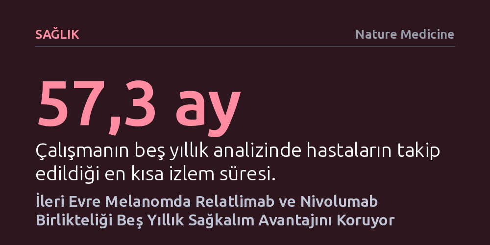

SAGLIK · Nature Medicine · 2026-10-25
İleri evre melanom hastalarında nivolumaba relatlimab eklenmesi, tek başına nivolumaba kıyasla beş yıllık takipte ölüm ve ilerleme riskini yaklaşık yüzde yirmi beş oranında azaltıyor. Çalışma, LAG-3 kontrol noktasını hedeflemenin tümörün tekli immünoterapiye geliştirdiği birincil direnci kırdığını kanıtlıyor.
Kanser immünoterapisinde tek bir bağışıklık frenini kaldırmanın yetersiz kaldığı durumlarda, ikinci bir kontrol noktasını (LAG-3) aynı anda hedeflemenin birincil direnci kırarak beş yıllık kalıcı sağkalım üstünlüğü sağladığını kanıtlıyor.

İleri evre ve cerrahi müdahaleye uygun olmayan melanom (cilt kanseri), onkoloji alanının tedavisi en güç hastalıkları arasında yer alıyor. Son yıllarda PD-1 proteinini hedef alan nivolumab gibi bağışıklık kontrol noktası inhibitörleri hasta ömrünü belirgin biçimde uzatsa da hastaların önemli bir bölümü tedaviye hiç yanıt vermemekte veya zaman içinde direnç geliştirmektedir. Bu direnci aşmak amacıyla geliştirilen ve bağışıklık sisteminin farklı bir fren mekanizması olan LAG-3 proteinini hedefleyen relatlimab, nivolumab ile bir araya getirilerek RELATIVITY-047 çalışması kapsamında değerlendirildi.
Nature Medicine dergisinde yayımlanan ve en az 57,3 aylık takip süresine dayanan beş yıllık nihai analiz, bu ikili kombinasyonun kalıcı etkisini net biçimde ortaya koydu. İkili immünoterapi alan 355 hasta ile tek başına nivolumab alan 359 hasta karşılaştırıldığında; ilerlemesiz sağkalım, genel sağkalım ve melanom kaynaklı sağkalım eğrilerinin birbirinden belirgin şekilde ayrıldığı ve aradaki farkın beşinci yılda da korunduğu görüldü.
Elde edilen sayısal veriler klinik açıdan son derece çarpıcı: Kombinasyon tedavisi, tek başına nivolumaba kıyasla hastalığın ilerleme veya ölüm riskini yüzde 23 oranında (HR = 0,77) düşürürken, tüm nedenlere bağlı ölüm riskini yüzde 22 (HR = 0,78), melanom kaynaklı ölüm riskini ise yüzde 29 (HR = 0,71) oranında azalttı. Bu sonuçlar, iki ilacın birlikte uygulanmasının yalnızca geçici bir gerileme sağlamadığını, uzun vadeli ve kalıcı bir sağkalım avantajı sunduğunu doğruluyor.
RELATIVITY-047 araştırması, çift kör ve randomize bir faz 2-3 klinik çalışma olarak yürütüldü. Metastatik ya da cerrahi olarak çıkarılamayan 714 ileri evre melanom hastası, bire bir oranında iki tedavi koluna rastgele dağıtıldı. İlk gruptaki hastalara dört haftada bir damar yoluyla 480 mg nivolumab ve 160 mg relatlimab verilirken, kontrol grubuna aynı takvimle 480 mg nivolumab uygulandı.
Araştırmanın birincil sonlanım noktası, bağımsız merkezi değerlendirme heyetince belirlenen ilerlemesiz sağkalım süresiydi; ikincil hedefler arasında ise genel sağkalım, nesnel tümör yanıtı ve güvenlik yer aldı. Beş yıllık kapsamlı takipte yeni veya beklenmedik bir toksisite sinyali gözlenmedi; tedavinin güvenlik tablosu önceki ara raporlarla tam bir uyum sergiledi.
Araştırmanın biyobelirteç analizleri, kanser hücrelerinin immünoterapiye nasıl direndiğine ve bu direncin nasıl aşılabileceğine dair kritik mekanizmaları açığa çıkardı. Özellikle PD-L1 seviyesi yüzde 1 ve üzerinde olan hasta alt grubunda yapılan incelemeler, tek başına nivolumab ile alınan olumsuz sonuçların kanda ya da tümör dokusunda yüksek oranda bulunan LAG-3 pozitif CD8 T hücreleriyle doğrudan bağlantılı olduğunu gösterdi.
Tümör hücreleri, PD-1 yolu bloke edildiğinde alternatif bir bağışıklık kontrol noktası olan LAG-3 yolunu devreye sokarak T hücrelerini tüketebilmektedir. Relatlimabın eklenmesi bu ikinci freni de devre dışı bırakarak T hücrelerinin tümöre saldırmasını mümkün kılıyor. Elde edilen veriler, nivolumaba relatlimab ilavesinin tek başına nivolumaba göre "birincil direnç" gelişme oranını önemli ölçüde düşürdüğünü ve hedefe yönelik ikili blokajın biyolojik temelini kanıtlıyor.
Melanomda daha önce kullanılan ikili kontrol noktası kombinasyonları (örneğin CTLA-4 ve PD-1 blokajı) etkili olmakla birlikte ciddi otoimmün yan etkilere yol açabiliyordu. LAG-3 ve PD-1 ikilisinin sergilediği bu beş yıllık güçlü sağkalım performansı ve kabul edilebilir yan etki profili, klinisyenlere daha tolere edilebilir ve kalıcı bir tedavi seçeneği sunuyor.
Bu uzun dönemli veriler, ileri evre melanomda standart tedavinin tekli ilaçlardan biyobelirteç temelli ikili immünoterapilere kaymasını destekliyor. Kanser hastalarının tümör mikroçevrelerindeki direnç mekanizmalarını önceden belirleyerek doğru kontrol noktası kombinasyonlarını seçmek, kişiselleştirilmiş kanser tedavisinin temel taşı haline geliyor.